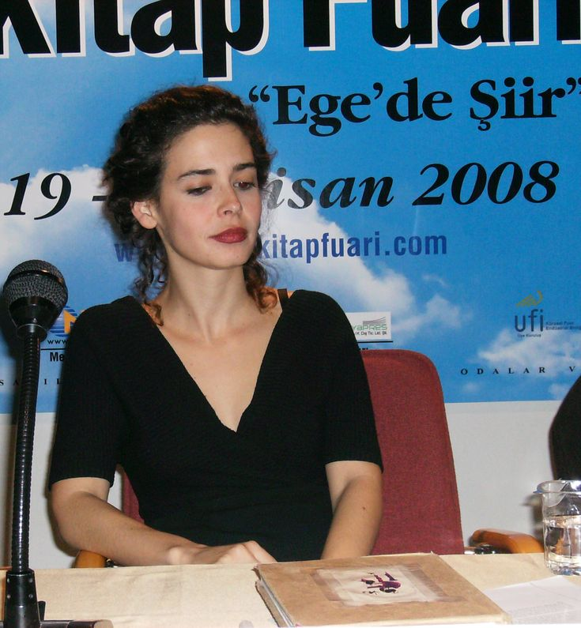

© 2025 Nesrin Özdemir | İstanbul Arkeoloji Müzesi
Dr. Pelin Batu ile İstanbul Arkeoloji Müzesi Gezisi, katılımcılara müzenin seçkin koleksiyonlarını tarih, mitoloji ve kültürel bağlamlarıyla birlikte keşfetme imkânı sunan özel bir anlatımlı etkinliktir. Dr. Pelin Batu’nun akademik birikimi ve güçlü anlatımı eşliğinde gerçekleştirilen bu gezi kapsamında, Antik Çağ’dan Yakın Doğu uygarlıklarına uzanan eserler detaylı biçimde ele alınmakta; her bir eser dönemin tarihsel, sanatsal ve düşünsel yapısı içinde değerlendirilmektedir. Sınırlı kontenjanla düzenlenen bu etkinlik, müze deneyimini derinleştirmek ve ziyaretçilere nitelikli bir kültürel bakış açısı kazandırmak amacıyla planlanmıştır.
